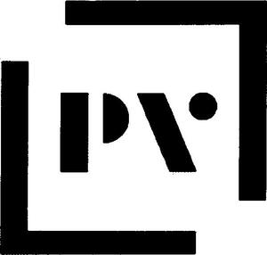

Trade Mark Journal No.2025/041 10 October 2025
WO0000001280106 (35,41,45)
Office of origin: Denmark
Date of International Registration:10 July 2015
Date of designation in the UK:
11 July 2025

The mark consists of the stylized letters P and V surrounded by a stylized incomplete frame.
- Class 35
- Business management; business administration; consultancy relating to corporate strategy; office functions; providing business information; managing databases containing information regarding intellectual and industrial property; business consultancy and office functions in relation to the management of intellectual and industrial property rights; conducting surveys and opinion polling; rating and analysis with regard to (non-financial) company assets, including company assets concerning intellectual property; updating and maintenance of data relating to intellectual property rights in a computer database.
- Class 41
- Teaching and educational services; organisation of seminars, conferences and workshops; translations.
- Class 45
- Legal services, patent agencies; trademark agencies; intellectual property services; intellectual property agency services; professional, advisory, licensing and consultation services relating to intellectual property; legal research and monitoring in the field of trade mark, design, trade name, patent, domain names and other rights, and consultancy thereon; consultancy and providing functions in the field of intellectual and industrial property law; consultancy and mediation in the registration of, and legal research into, trademarks, designs, trade names, patents and domain names; legal research into issues concerning the protection of industrial property and legal issues; legal services and consultancy with regard to intellectual and industrial property rights; management of intellectual and industrial property rights; filing, registration, processing, protection, management, maintenance, exploitation and enforcement of intellectual property rights; consultancy and mediation in (legal) disputes; consultancy and mediation in relation to the exploitation of inventions and designs; legal services relating to the registration of trademarks; due diligence services; management of intellectual and industrial property rights; consultancy and mediation with regard to disputes.
Plougmann Vingtoft a/s